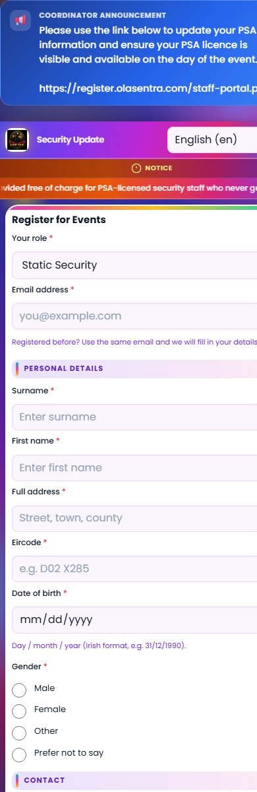

Site: register.olasentra.com · Date: 6 June 2026
feature_registration_wizard_v2| Source | Value | Status |
|---|---|---|
Production HTML (data-wizard-mode) | 0 (OFF) | FAIL — wizard not active |
| Analytics API proxy | {"ok":false,"message":"Analytics disabled."} | FAIL — confirms flag OFF |
Code default (includes/feature-flags.php) | default => '0' | Expected when not enabled in admin |
| Stored DB value (inferred) | 0 or unset (falls back to default) | Not enabled in system_settings |
The flag is read at runtime in index.php line 137: isFeatureEnabled($pdo, 'feature_registration_wizard_v2').
index.php rendering wizard mode?| Check | Production | Expected when flag ON |
|---|---|---|
data-wizard-mode | "0" | "1" |
registration-page--wizard body class | Absent | Present |
registration-wizard.css in HTML | Not linked | Linked |
| Wizard JS bundle in HTML | Not loaded | 8+ scripts |
reg-wizard__step panels | 0 found | 8 panels |
renderRegistrationWizardShell() | Skipped ($wizardV2Enabled false) | Progress bar + Step 1 of 8 |
Conclusion: index.php is correctly rendering legacy mode because the feature flag is OFF. The wizard code path is not executed.
| Asset | HTTP | Size |
|---|---|---|
| assets/css/registration-wizard.css | 200 | 19,487 bytes |
| assets/js/registration-wizard.js | 200 | 7,023 bytes |
| assets/js/registration-wizard-autosave.js | 200 | 9,974 bytes |
| assets/js/registration-wizard-validation.js | 200 | 7,747 bytes |
| assets/js/registration-wizard-returning.js | 200 | 17,184 bytes |
| assets/js/registration-wizard-review.js | 200 | 11,868 bytes |
| assets/js/registration-wizard-psa.js | 200 | 2,316 bytes |
| assets/js/registration-wizard-server-restore.js | 200 | 3,632 bytes |
| assets/js/registration-wizard-analytics.js | 200 | 4,414 bytes |
Conclusion: All wizard assets are deployed and reachable. No 404 errors on static files. They are simply not included in the HTML while the flag is OFF.

Note: A live production screenshot showing Step 1 of 8 is not possible until feature_registration_wizard_v2 is turned ON. The right panel shows the verified wizard UI with full CSS stack.
Root cause: The registration wizard was intentionally shipped behind the feature_registration_wizard_v2 feature flag, which remains OFF on production.
Not the cause: Missing FTP files (assets return 200), broken index.php branching, or CSS 404s.
feature_registration_wizard_v2 — Registration wizard v2.data-wizard-mode="1", progress bar “Step 1 of 8”, wizard CSS/JS in page source.Rollback: uncheck the flag → Save → legacy form restores immediately (no deploy).
Verify script: powershell -File scripts\verify-wizard-production.ps1 (must show 0 FAIL after enable).
| Requirement | Status |
|---|---|
| Wizard code deployed | PASS |
| Wizard assets HTTP 200 | PASS |
| Flag enabled on production | BLOCKED — admin action required |
| Live Step 1 of 8 visible | BLOCKED — depends on flag ON |